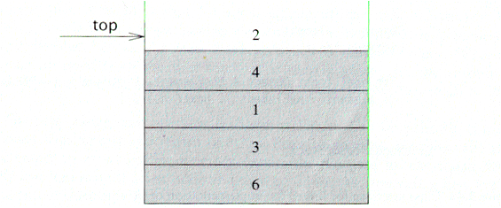

ABSTRACT DATA TYPE
A stack is a list with the restriction that insertions and deletions can only be performed at the top of the list and the other end of the list is called bottom.

Fundamental operations:
Push: Equivalent to an insert
Pop: Deletes the most recently inserted element
Top: Examines the most recently inserted element